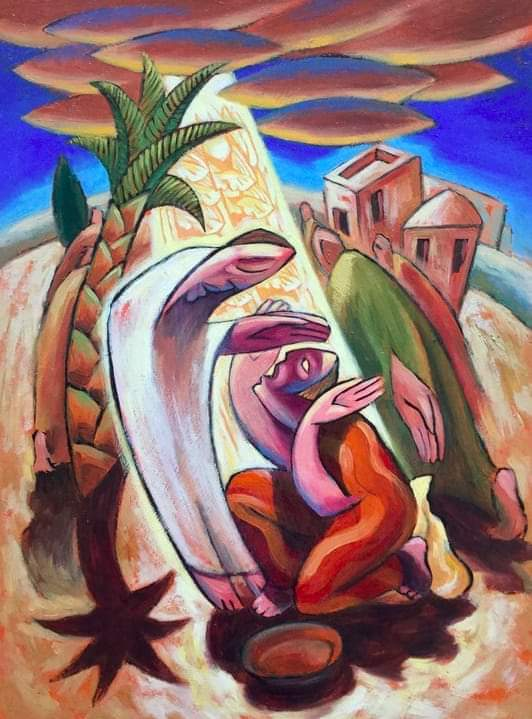

(Ne)vjerni Toma

Od dvanaestorice Isusovih učenika jedan je ponio naslov izdajice, a drugi onoga koji je nevjeran. Prvi je bio Juda Iškariotski. Drugi je Toma zvani Blizanac. Nije to baš neka posebno dobra statistika za Isusa, ali valjda je to tako kad čovjek ima posla s ljudima.
Ivanovo evanđelje donosi nam izvještaj o Isusovom ukazanju učenicima među kojima nije bilo Tome (Iv 20,19-23), a onda i o Isusovom ukazanju samo zbog Tome (Iv 20,24-29). Čitajući te izvještaje otkrivamo radost koju su učenici imali „vidjevši Gospodina“ (Iv 20,20). Radost za koju je Toma bio uskraćen. Radost koju je Toma ne samo odbijao prihvatiti nego ju je još i uvjetovao: „Ako ne vidim na njegovim rukama biljeg čavala i ne stavim svoje prst u mjesto čavala, ako ne stavim svoju ruku u njegov bok, neću vjerovati“ (Iv 20,25).
Naredni redak Ivanovog evanđelja nakon Tominog zahtjeva da vidi i dotakne Isusa otkriva svu dramu i težinu njegova života: „I nakon osam dana bijahu njegovi učenici opet unutra, a s njima i Toma. Vrata bijahu zatvorena, a Isus dođe, stade u sredinu i reče: 'Mir vama'“(Iv 20,26). Osam dana. Osam dana! Osam dana je Toma čekao na Isusovo očitovanje. Dok su ostala desetorica tih osam dana bili radosni jer su vidjeli Isusa koji je živ nakon što je bio mrtav, on je čekao. Osam dana je Toma čekao. Možda nam se, jer smo naviknuli na užurbani životni tempo i vrijeme koje, barem nama koji imamo nešto godina na leđima, brzo prolazi, to ne čini posebno dugo. Dođe ponedjeljak kad trebaš ići raditi pa čekaš taj petak kad prestaješ s poslom, onda je tu vikend kojeg ti upropasti činjenica da nakon njega opet dolazi ponedjeljak i prolaze dani, mjeseci, godine. I tako se osam dana zaista i ne čini kao nešto puno. Ali evo kako piše Soren Kierkegaard pokušavajući čitatelju dočarati Abrahamovo žrtvovanje Izaka: „Pripovijest o Abrahamu shvaća se drugačije. Ljudi hvale Božju milost jer je on opet darovao Izaka, na cijelu stvar se gleda kao na ispit. Ispit, ovo je riječ koja može značiti puno i malo, i sve prođe tako brzo kao što je izgovoreno. Uzjaši se na jednog krilatog konja, u tren oka se stigne na brdo Moriju, u istom trenu ugleda se ovna; zaboravlja se da je Abraham jahao samo na magarcu koji je putem polako kasao. Bijaše to jedno trodnevno putovanje, neko vrijeme mu je trebalo i da nasiječe drva, Izaka zaveže i naoštri nož. (…) Podsjetio bih na to da je putovanje trajalo tri dana i dobar dio četvrtog, a ova tri i pol dana morala su biti beskrajno duža od par tisuća godina koje me dijele od Abrahama.“ Koliko je tek dugo bilo Tominih osam dana? Jer ovdje je bila riječ o onome koji bijaše prije negoli Abraham posta (Iv 8,58), o onome koji je uzrok Abrahamova kliktanja i radosti (Iv 8,56): je li živ ili je i dalje mrtav? Osam dana. Onaj tko misli da vrijeme brzo prolazi neka za malu promjenu perspektive stavi svoje tijelo u položaj vježbe „plank“ na jednu minutu i otkrit će da je ta minuta beskrajno duga kad su svi mišići tijela napeti. Osam beskrajnih dana je Toma živio s napetom svakom stanicom svoga bića prije nego što je ugledao Isusa živa. Kako je živio? Evanđelje o tome ne govori ništa. Ja se o tome ne usudim ni slova napisati. Osjećam da moja tipkovnica nije dostojna.
Netko će reći „Sam se doveo u takvu situaciju, zašto nije povjerovao ostalim učenicima koji su vidjeli Isusa?“ Odgovaram protupitanjem: „Zašto njihovo svjedočanstvo nije bilo uvjerljivije? Čak su bili i brojčano nadmoćniji. Ako njih desetorica ne mogu uvjeriti jednog koji je njihov, kako li će tek ostatak svijeta?“ Tu možda leži ključ evanđeoskog izvještaja o Tomi. Toma je bio jedan od dvanaestorice. Zbog nekog, nama neznanog razloga, nije bio prisutan kad se Isus prvi puta pokazao svojim učenicima. I nije vjerovao. Sumnjao je. Rekao bih, s pravom. Ne zato što nije htio vjerovati nego baš zato što je htio vjerovati. I on se htio „obradovati vidjevši Gospodina“ (Iv 20,20). On je htio opet biti jedan od njih, ali sam sebe nije mogao takvim učiniti. Kako bi bilo tužno Tomino svjedočanstvo o Isusu da je bio lišen tog susreta! Jer posljednje što je znao, a možda i vidio, jest da su Isusa položili u grob. Ako je Isus živ, a Toma ga nije vidio, Tomina riječ o Isusu je mrtva. Svjedočanstvo mu je tek dogmatsko dociranje. Naučena fraza. Thomas Merton je zapisao: „Uskrsnuće je Kristovo srce kršćanske vjere. Bez njega, Isusova smrt na križu bila bi samo tragedija jednog poštenog čovjeka – smrt židovskog Sokrata.“ Toma je bio svjedok te tragedije. Smrti. Ali htio je više. Život. Htio je biti u srcu vjere u Isusa. Živoga. Htio je biti svjedok uskrsnuća. Tomina nevjera nije nekakva malograđanska poza, tako uobičajena u naše vrijeme, u kojoj onaj koji ne vjeruje, ne vjeruje jer mu se ne vjeruje. Ona je iz srca iskren krik, istinska čežnja čovjeka koji je s Isusovom smrću na Veliki petak izgubio sve. Čežnja da Isus, jer samo on to i može, svojim uskrslim očitovanjem „vrati“ sve što je bilo izgubljeno. Tomi nije do misaonih akrobacija nego do života. Kad traži mogućnost da stavi svoj prst u mjesto čavala u Isusove ruke on zapravo traži način kako da opet sebe i svoj život stavi u te iste, Isusove ruke. Iz takve sumnje, nakon susreta s Uskrslim, proizlazi i tako velika vjera: „Gospodin moj i Bog moj!“
Bog je ljubav

Bog je ljubav. Eto rečenice toliko duboko kršćanske, poznate i priznate čak i od onih koji ne pripadaju Isusovim sljedbenicima, ali vjeruju da postoji Netko ili barem Nešto „iznad“ nas. No, gle čuda, ta popularna rečenica uopće nije Isusova. Nikada te riječi nisu prešle preko njegovih usana. Zapisao ju je njegov učenik Ivan. Isus nije bio čovjek od definicija nego od priča, prispodoba. Jedna takva je o nekom bogatašu i siromašnom Lazaru.
Priča je to o dva čovjeka potpuno drugačije sudbine: dok se bogataš odijeva u grimiz i lan te svakodnevno delicijama hrani svoje nepce, Lazar leži pred njegovim vratima i hvata ono što pada s bogataševa stola. Bio je toliko jadan i odvratan da nitko od ljudi nije obraćao pozornost na njega pa su psi morali doći i lizati mu čireve (često su životinje bolje prema ljudima nego ljudi jedni prema drugima, a u posljednje vrijeme se stvar okreće pa smo mi ljudi bolji prema životinjama nego prema svojoj vrsti; o tempora!, ali ne ona Stanko Stojić).
Priča je to o sudu nakon smrti gdje svatko dobiva zasluženu nagradu i zasluženu kaznu. Lazar, koji je trpio za života sada uživa raj, a bogataš koji je uživao sva moguća dobra trpi paklene muke. Ali ima još nešto o toj priči što uvijek i trajno previđamo, a to je da ne znamo. Jednostavno ne znamo. Nemamo nikakvih informacija o tome kako je Lazar došao u svoju situaciju. Možda je bio siromah od rođenja. Možda je sve prokockao. Možda je sve potrošio na prostitutke. Možda je bio pijanac. Možda se drogirao. Možda je, iz bilo kojeg nama nepoznatog razloga, zapravo sam bio kriv za stanje u koje je upao. Ne znamo. I ne trebamo znati. O tome nećemo biti pitani u predvečerje svoga života nego ćemo, kako to lijepo kaže san Juan de la Cruz, „biti pitani o ljubavi“. Bit ćemo pitani tu tako slavnu i poznatu rečenicu „Je li Bog bio ljubav u našem životu?“
A da je Bog ljubav ne znači samo da me Bog ljubi. Možda ponajmanje to jer drugačije bi bilo i čudno. Najbolje da me On mrzi! Suvremena sladunjava tumačenja te kršćanske mantre zamračuju njezin pravi smisao i sadržaj. „Bog je ljubav“ u prvom redu i smislu znači da je Bog davanje i da je davanje zakon njegovog nutarnjeg života, ali samim time, i za nas još važnije, zakonom svemira u kojem živimo. Isus se u svojoj priči o bogatašu i Lazaru naslanja na taj zakon i govori kako je on mjera kojom će nam se mjeriti na kraju života. Naslanja se na duboku židovsku tradiciju koja je najbolje, i na komičan način, izražena u dramatičnoj priči o proroku Iliji i udovici iz Sarfate kojoj, za vrijeme velike suše i neimaštine, Ilija biva upućen ne bi li sačuvao svoj život. Vjerujući Jahvi na riječ dolazi kod žene koja tužno govori „Živoga mi Jahve, tvoga Boga, ja nemam pečena kruha, nemam do pregršti brašna u ćupu i malo ulja u vrču. I evo kupim drva, pa ću otići i ono pripremiti sebi i svome sinu da pojedemo i umremo.“ Ilija na njenu nevolju odgovara nečuvenom rečenicom „Ništa se ne boj. Idi i uradi kako si rekla; samo najprije umijesi meni kolačić…“ Zakon ljubavi. Zakon davanja drugome. Čak i onda kad ti se čini, pa čak i s pravom misliš, da nemaš što za dati. Daruj se. Koliko možeš. Onaj koji je ljubav će sve to već blagosloviti i neće nestati života. I neće biti pakla. Ni ovdje. Ni tamo. Ljubi djelima. Daruj se do kraja. Jer ljubav je zakon. Najjači od svih.
Formula za Boga ili Beskonačni u konačnom
Kada zatvorim oči vidim mrak. I tako ne vidim ništa. Otvaram ih da bih vidio. Bolje se osjećam kada vidim. Bolje živim kad vidim. Mogu više dok gledam. Neki ljudi ne vide. Ni kada drže oči širom otvorene. Oni su slijepi. Zbog toga se oslanjaju na ostala osjetila.
Jedan takav čovjek je bio Bartimej, sin Timejev. Hendikep na očima učinio ga je prosjakom. Sjedio je izvan grada Jerihona i prosio. I slušao. Stalno je slušao. Onaj koji ne vidi oslanja se na sluh. Bartimej je slušao i prosio. Jednog dana je oko sebe čuo mnoštvo. To mu je probudilo znatiželju: o čemu se radi? tko prolazi? Rekli su mu da je to Isus Nazarećanin. Čuvši da mu je Isus blizu Bartimej je istog trenutka počeo vikati „Isuse, Sine Davidov, smiluj mi se!“ Kad su ga nazočni htjeli ušutkati on je svu svoju snagu stavio u glasnice i još jače vikao „Isuse, Sine Davidov, smiluj mi se!“ Tada se Isus zaustavio i zatražio da ga pozovu k njemu. „Što hoćeš da ti učinim?“ bilo je Isusovo pitanje. Bartimej je htio napokon gledati očima koje ima. Izići iz mraka. I njegov Učitelj ih je ozdravio. Jednom jedinom rečenicom. Jer Bartimej je vjerovao. Jednom jedinom rečenicom: „Isuse, Sine Davidov, smiluj mi se!“ Ostaje tajna što je sve točno Bartimej čuo o Isusu Nazarećaninu za dugih dana dok je prosio nadomak Jerihona. Ali to je bilo dovoljno da u njemu prepozna Krista. I povjeruje. Iz te vjere proizišao je novi život. I njegovo ozdravljenje.
Bartimejeva rečenica nije, kako bi se na prvu moglo pomisliti, neka magična formula kojom Boga činim svojim slugom. Ili fontanom za svoje želje. To nije rečenica u koju vjerujem nego vjera koju izričem: da je Nazarećanin zaista Sin Davidov tj. Krist, Sin Božji. To je rečenica u kojoj se Riječ prepoznala. Rečenica na koju se Riječ odazvala. Zato je važna. Zato ima snagu. Ne samo pokazati vjeru tamo gdje je ima nego i probuditi vjeru tamo gdje je nema. Jer to su riječi u kojima se Riječ nastanila. Tko njih izgovara otvara svoja vrata toj istoj Riječi. Koja onda može i oči otvoriti. Da u mom životu bude više života.